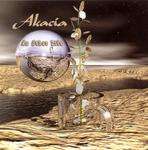

| Artist: | Akacia |
| Title: | An Other Life |
| Label: | Musea FGBG 4515 |
| Length(s): | 57 minutes |
| Year(s) of release: | 2003 |
| Month of review: | [01/2004] |
| 1) | Order Of Events | 16.36 |
| 2) | Mary | 6.41 |
| 3) | Hold Me | 11.02 |
| 4) | Journal | 22.41 |
Naylor's voice is a pretty decent one, the words come out easily enough most of the time, but it lacks in strength and reach, which tells in such sections which are a bit stronger, such as the bridge in Mary. Naylor comes across shouty and unconvincing in such sections.
The majority of tracks show decent complexity in instrumental sections, but there are sections which have a poppy and rather neo feel. The guitars come across strong enough, supported well by bass and drums. The keys are less convincing, and more for filling in in a light wizzy way. Hold Me starts off with a lengthy instrumental section, led by guitar, supported with synth and organ. The shift from this instrumental bit into the vocal one is a bit stiff, making it sound deliberate. Instruments and voice do work well together on this track, which is a plus and the strong section towards the end sounds pretty good. Pity there's not more of this kind of material on the disc.
The start of Journal sounds pretty mellow after the strong ending of its predecessor. Some instrumental sections are unenticing and the vocals once again lack bite, and are sometimes off by just the slightest bit. This, frankly, is a good example of a track that should never have reached its length. Sure, there is that epic feel about it, and there is a story to tell, but just not enough for 22 minutes.
And just so you know: the lyrics are of a pretty religious nature.
This band might be compared to Salem Hill, but the latter has managed to come up with more good compositions, after, admittedly, having had more tries. Another likeness is to Saens, another band stretching too many ideas past ten minutes.
Packing it all up I'd say that practice could make perfect: the band shows some strong moments compositionally, but not enough for a strong album, by some distance still. More subtlety and accepting that some tracks just are that bit shorter will help.